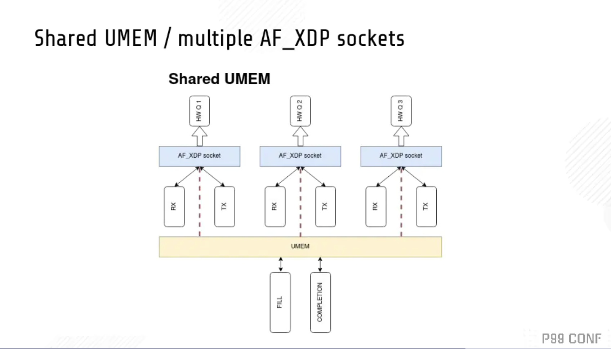

P99 Conf Talk 汇总 | Rust 在高性能低延迟系统中的应用
P99 Conf 是一个由 Scylladb 组织的新的跨行业的线上Conf，为工程师而设。该活动以低延迟、高性能设计为中心，范围包括操作系统（内核、eBPF、IO_uring）、CPU（Arm、Intel、OpenRisc）、中间件和语言（Go、Rust、JVM、DPDK）、数据库和可观测性方法。P99 CONF只面向技术人员，你的老板不在邀请之列。
四场演讲分别为：
- Rust，莱特定律和低延迟系统的未来
- 芜湖！我用 Rust 重写了推特的内存缓存框架 Pelikan 模块 ！
- Rust 确实安全，但是它快吗？
- 使用eBPF、XDP和 io_uring 构建高性能网络
以下是本人观看四场 Talk 的过程中记录的摘要笔记。
Rust，莱特定律 和 低延迟系统的未来
《Rust, Wright’s Law, and the Future of Low-Latency Systems》- 作者： Bryan Cantrill, Oxide 计算公司 CTO
关于 Oxide 公司： https://cloud.tencent.com/developer/news/567765
莱特定律（Wright's Law）： 莱特定律在1936年由西奥多·莱特（Theodore Wright）率先提出，核心内容就是说某种产品的累计产量每增加一倍，成本就会下降一个恒定的百分比。 在汽车领域，从1900年就遵循这一规律，产量每累计增加一倍，成本价格就会下降15％。
莱特定律 和 摩尔定律 共同被应用于预判科技如何改进。
系统性能的仲裁者：硬件。
系统性能的历史，能看到三类性能改革：
- process revolutions。半导体工艺（process）改革。
- Architectural revolutions。架构改革。
- Software revolutions。软件改革。
不管技术如何改革，这一切都得受经济的制约。
谈到 半导体工艺改革，就得谈到摩尔定律。
作者说到现在的 7nm、5nm、3nm工艺时，比较激动，他说，作为这个芯片行业的人，他觉得应该对这类术语负责，实际上并没有什么东西可以是5nm、3nm长，没有那么长的晶体管，这里实际指的是晶体管密度。
在晶体管工艺上，摩尔定律实际已经减速。因为低纳米的制程工艺成本很高，摩尔定律不再成为经济规律。
莱特定律比摩尔定律可以更好地预测晶体管变化的规律，它代表的是一个规模经济。晶体管累计产量越多，成本就会下降一个恒定的百分比。
你的电脑上有一堆隐藏的cpu核心，并且可能会越来越多。并且这些核心可能是不同工艺的核心的复合体。并且还可以把核心放到它需要的地方。
这就是来自莱特定律的礼物。这对性能产生了影响。
我想到了苹果发布的 m1 macbook。
当这些CPU 核心充斥到很多角落的时候，也就意味着那里多了很多计算单元，并且有很大一部分是资源有限的情况，比如没有过多内存等。
那如果你要为这些计算单元编写程序，你选择什么语言呢？ Python ？Go ？Java？ Cpp？ C？
有些人说 CPP 和 C ，但是作者作为二十多年的 资深 C 开发者，他推荐 Rust。 Rust 在专用计算领域有杀手级特性： 它不依赖于标准库，所有核心功能都在 core里。作者的公司 Oxide 开发了一套基于消息传递、内存保护的操作系统，只需要 30k 空间（未优化）。
其实 tockOS 更小，自身编译后大小 4 KB 左右，内存占用 900 B，不到 1KB。
因为莱特定律的原因，未来将会在更多地方进行计算，并且这些计算元素将为特殊用途服务，在这些领域，Rust 将成为首选语言，而C 语言它存在于 软件与 硬件的边界。
作者最后说，不要等待，现在正是开发高性能低延迟系统的一个非常激动人心的时刻， Rust 革命就在这里发生。
芜湖！我用 Rust 重写了推特的内存缓存框架 Pelikan 模块 ！
《Whoops! I Rewrote It in Rust》 - 作者 ：Brian Martin, Twitter 软件工程师
用 Rust 的机遇 ？
Pelikan 框架 （之前是C 实现）需要增加 tls 支持，因为 Brian 的 经理没有时间做这个模块，就交给了他。 他认为这个模块用 Rust 实现会很舒服，所以就用了 Rust。
如何看待性能测试？
在深入之前，需要介绍下性能测试，他们对性能有两个目标：
- 最大化吞吐量
- 提供良好的延迟： p999 < 1ms (过去10秒内最慢的0.1%的请求的平均延迟要小于 1ms)
这里面需要考虑尾延迟（Tail Latency）的问题。
少量响应的延迟高于均值，我们把这些响应称为尾延迟（Tail Latency）。对于大规模分布式系统来说，尾延迟的影响尤其严重。 磁盘老化、超时、后台任务、超负载运行、全局资源共享等等。
- fanout = 1 ， 只有 0.1% 的请求比 p999 慢
- fanout = 10， 会有 1% 的请求比 p999 慢
- fanout = 100， 会有 10% 的请求比 p999 慢
尾延迟发生的频率比你想象的高。
开始第一次尝试
对 2019 年用 Rust 实现的 Rust 缓存 Twemcache 为基础来添加 tls 支持，该项目特性：
- memcached 兼容
- Tokio 异步实现网络部分
- 使用 C 存储库
先进行了性能测试，发现吞吐量不满足要求。尾延迟比性能测试目标也高出 25%。和 C 实现的 Twemcache 版本相比，Rust 的延迟更高，吞吐量也是 Rust 更低。
Brian 再想， Rust 的性能是否可以更好。
他于是进行了第二次尝试。
Rust Pingserver vs C Pingserver
为了验证 Rust 的性能，他分别用 Rust 和 C 实现了一个简单的 Ping/Pong 服务。
然后为它们支持 性能测试相关内容，增加 tls 支持。
基准测试以后发现 Rust 版本 和 C 版本的 吞吐、延迟是完全持平的。
继续开始 Twemcache 原型实现
验证了 Rust 的性能之后，继续 Twemcache 原型实现：
- 临时将 C 存储库换成 Rust 的hashmap，为了专注于实现 memchached 协议的兼容
- 然后再把 C 存储库换回来
但是后面因为性能监控部分 metrics 和 log 导致会出现 Rust和C 交互的一些问题，Brian花了大量时间来处理这个问题，虽然找到了解决办法，但是也让他萌生了一个想法：为什么不用 Rust 完全重写 Twmcache 呢？
用 Rust 重写
C 存储库用 Rust 重写相当复杂。包括了很多自引用类型、内存分配、链表、到处都是指针、要用很多unsafe等等。
也许可以先从单线程版的 C 存储库开始会更简单。然后他就用 Rust 重写了。
优点：
- 纯 Rust
- 重写有助于改进代码
- 为设计增加新的idea
- 抛弃 make和cmake，愉快地使用 cargo
缺点：
两个月的工作量，还没有100%完成。
小结
Brian以及他的经理，认为这次重写，从 Rust 得到了很多收益。 Rust 让他们突破了 C 的限制，觉得这就应该是 Pelikan 模块的正确方向。
最终性能指标也达到了要求，并且比 memcached 延迟更低。
Rust 确实安全，但是它快吗？
《Rust Is Safe. But Is It Fast?》- 作者： Glauber，Rust异步框架 Glommio作者，曾经是Datadog 资深工程师，非常关注性能和资源管理。现在是 ChiselStrike 公司 CEO。
Why Rust
他选择 Rust 的理由：
因为 Rust 功能不如 Cpp 强大。 你没看错，他认为 Rust 不如 Cpp强大，所以选 Rust。他认为，当你给了代码编写者强大的力量，意味着，与此同时也剥夺了代码阅读者的权力。
Rust 的特性
依次介绍了 Rust 的一些特性，比如 Lifetime、 trait系统、Sync/Send 。异步 等。
Glommio
Glommio 是一个基于 io_uring 的 Thread-per-Core 架构的异步运行时框架。
什么是 Thread per core？
为了消除线程上下文的切换成本，引入了该架构。Thread-per-core 就是指每个内核或CPU都运行一个线程，而且通常（不是必须）这些线程都被“钉在”同一个特定 CPU 上。操作系统调度程序将不会随意移动这些线程，而且同一个CPU 内也不会有其他线程，因此就不会有上下文切换。
每个异步任务都会明确分配给特定线程。这种模式不需要锁。一般用于降低系统延迟。
Glommio有自己的内部调度器，它选择运行哪个任务队列，并为每个队列提供与其份额成比例的时间。通过从一开始就利用io_uring，Glommio可以重新审视Rust中的I/O应该是什么样子。
对于每个执行线程，Glommio都注册了自己的独立 ring （角色不同），可以无锁地操作。一个正常的请求，比如打开或关闭一个文件，从一个套接字中发送或接收数据，将进入主ring 或延迟ring，这取决于其延迟需求。
当这些请求准备好了，它们就会发布到io_uring的完成ring 上，Glommio就可以消费它们了。由于io_uring的架构，甚至不需要发出系统调用。事件存在于Linux和应用程序之间的共享内存区域，并由一个环形缓冲器管理。
相比于 Tokio
Tokio 默认是多线程运行时，所以需要 static 生命周期和 实现 Send 的 任务，而不能发送引用，这对于系统延迟是一个影响。
但是 Glommio 因为是 thread-per-core，所以可以方便地使用引用。Glommio 整个运行时没有使用太多的原子类型。
tokio 最近也在支持 io_uring 。
与其他运行时性能比较：
glommio 的吞吐量比 tokio、async-std、smol更高。
其他心得
在 Rust 中很难实现 零拷贝（zero-copy），并且很难与您希望进行零拷贝的任何接口一起使用。
使用eBPF、XDP和 io_uring 构建高性能网络
《High-Performance Networking Using eBPF, XDP, and io_uring》 - 作者：Bryan McCoid， Couchbase 分布式系统工程师，也是 Glommio 的积极贡献者，他更喜欢 thread-per-core 模型，因为这个模型更像分布式。
在网络世界中，有许多方法可以提高性能，而不是只会使用基本的Berkeley套接字。
这些技术包括轮询阻塞套接字，由 Epoll 控制的非阻塞套接字，io_uring ，一直到完全绕过Linux内核，通过使用像 DPDK 或 Netmap 这样的东西直接与网络接口卡对话，来获得最大的网络性能。
Bryan 这次演讲会介绍AF_XDP的设计，使用的eBpf代码，以及驱动这一切所需的用户空间代码。它还将包括与常规内核网络相比，这种设置的性能数字。最重要的是如何把所有这些放在一起，在一个现代多核系统上处理尽可能多的数据。
为什么不用 DPDK ？ Bryan回答，因为它太复杂。
eBPF 是什么？
eBPF 是一套通用执行引擎，可以在 Linux内核执行沙箱程序。提供了可基于系统或程序事件高效安全执行特定代码的通用能力，通用能力的使用者不再局限于内核开发者；eBPF 可由执行字节码指令、存储对象和 Helper 帮助函数组成，字节码指令在内核执行前必须通过 BPF 验证器 Verfier 的验证，同时在启用 BPF JIT 模式的内核中，会直接将字节码指令转成内核可执行的本地指令运行。
同时，eBPF 也逐渐在观测（跟踪、性能调优等）、安全和网络等领域发挥重要的角色。Facebook、NetFlix 、CloudFlare 等知名互联网公司内部广泛采用基于 eBPF 技术的各种程序用于性能分析、排查问题、负载均衡、防范 DDoS 攻击，据相关信息显示在 Facebook 的机器上内置一系列 eBPF 的相关工具。
相对于系统的性能分析和观测，eBPF 技术在网络技术中的表现，更是让人眼前一亮，BPF 技术与 XDP（eXpress Data Path） 和 TC（Traffic Control） 组合可以实现功能更加强大的网络功能，更可为 SDN 软件定义网络提供基础支撑。XDP 只作用与网络包的 Ingress 层面，BPF 钩子位于网络驱动中尽可能早的位置，无需进行原始包的复制就可以实现最佳的数据包处理性能，挂载的 BPF 程序是运行过滤的理想选择，可用于丢弃恶意或非预期的流量、进行 DDOS 攻击保护等场景；而 TC Ingress 比 XDP 技术处于更高层次的位置，BPF 程序在 L3 层之前运行，可以访问到与数据包相关的大部分元数据，是本地节点处理的理想的地方，可以用于流量监控或者 L3/L4 的端点策略控制，同时配合 TC egress 则可实现对于容器环境下更高维度和级别的网络结构。 ---- 来自于 《eBPF 技术简介》
XDP 是什么？
XDP 的引入是为了解决 Kernel Bypass 存在的一些问题。解决方案就是：给内核网络栈添加可编程能力。
这使得我们能在 兼容各种现有系统、复用已有网络基础设施的前提下，仍然实现高速包处理。 这个框架称为 XDP，
- XDP 定义了一个受限的执行环境（a limited execution environment），运行在一个 eBPF 指令虚拟机中。eBPF 是 BSD Packet Filter (BPF) [37] 的扩展。
- XDP 程序运行在内核上下文中，此时内核自身都还没有接触到包数据（ before the kernel itself touches the packet data），这使得我们能在网卡收到包后 最早能处理包的位置，做一些自定义数据包处理（包括重定向）。
- 内核在加载（load）时执行静态校验，以确保用户提供的 XDP 程序的安全。
- 之后，程序会被动态编译成原生机器指令（native machine instructions），以获得高性能。
参考：[[译] [论文] XDP (eXpress Data Path)：在操作系统内核中实现快速、可编程包处理（ACM，2018）](http://arthurchiao.art/blog/xdp-paper-acm-2018-zh/)
如何使用 XDP ，以及设计一个 Rust 运行时
Bryan 要把现存的 Glommio 框架，改为基于 xdp socket 的实现。
基本布局 ：

我们使用普通的 socket() 系统调用创建一个AF_XDP套接字（XSK）。每个XSK都有两个ring：RX RING和 TX RING。套接字可以在 RX RING 上接收数据包，并且可以在 TX RING 环上发送数据包。这些环分别通过 setockopts() 的 XDP_RX_RING 和 XDP_TX_RING 进行注册和调整大小。每个 socket 必须至少有一个这样的环。RX或TX描述符环指向存储区域（称为UMEM）中的数据缓冲区。RX和TX可以共享同一UMEM，因此不必在RX和TX之间复制数据包。
UMEM也有两个 ring：FILL RING 和 COMPLETION RING。应用程序使用 FILL RING 向内核发送可以承载报文的 addr (该 addr 指向UMEM中某个chunk)，以供内核填充RX数据包数据。每当收到数据包，对这些 chunks 的引用就会出现在RX环中。另一方面，COMPLETION RING包含内核已完全传输的 chunks 地址，可以由用户空间再次用于 TX 或 RX。
参考 AF_XDP技术详解 ，有助于理解该 Talk内容。
也有很多其他设计。


以上是两种其他方案。
如何集成到 Glommio 中，请看代码 ： https://github.com/bryandmc/glommio/blob/xdp/glommio/src/net/xdp_socket.rs